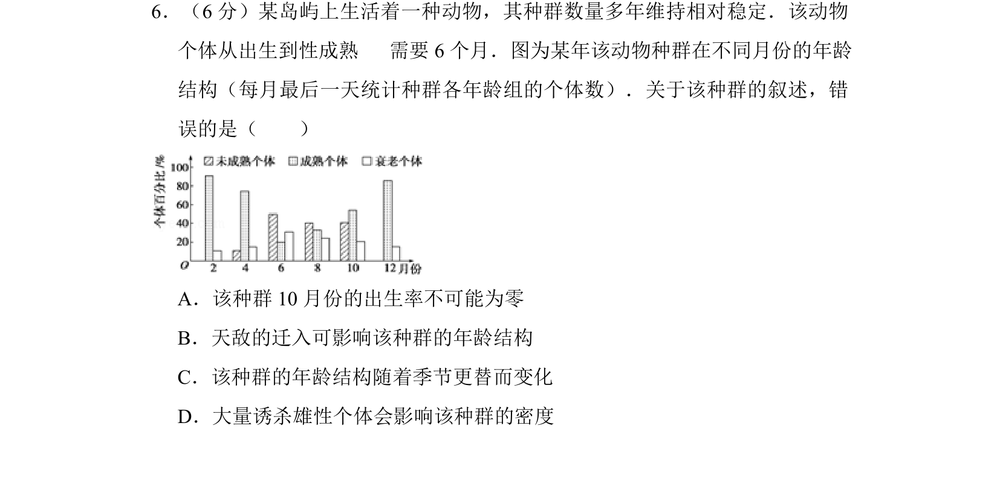
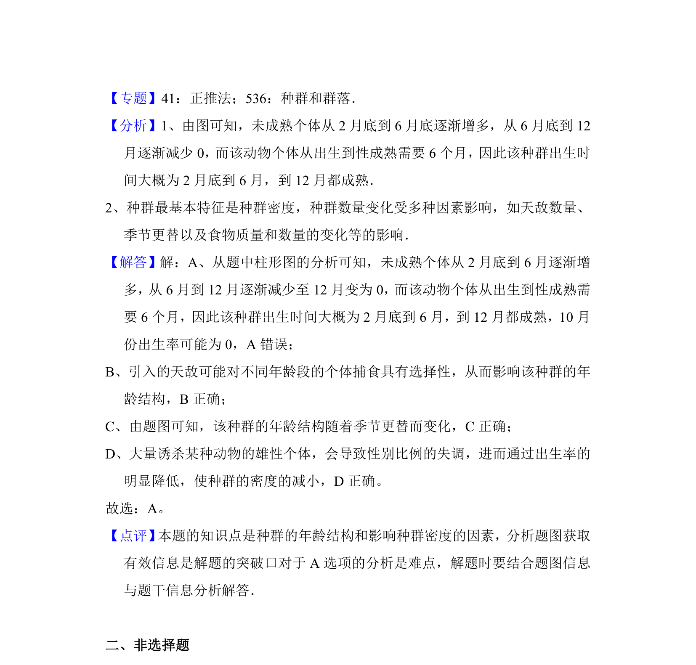

考点：种群特征 年龄结构 出生率 死亡率

该题考查种群年龄结构图的解读及种群特征相关知识的判断。

📄 原 PDF 第 5 页：
素材/真题/吉林/2008-2024·（吉林）生物高考真题/2012年高考生物试卷（新课标）（解析卷）.pdf
6．（6分）某岛屿上生活着一种动物，其种群数量多年维持相对稳定．该动物 个体从出生到性成熟 需要6个月．图为某年该动物种群在不同月份的年龄 结构（每月最后一天统计种群各年龄组的个体数）．关于该种群的叙述，错 误的是（ ） A．该种群10月份的出生率不可能为零 B．天敌的迁入可影响该种群的年龄结构 C．该种群的年龄结构随着季节更替而变化 D．大量诱杀雄性个体会影响该种群的密度
【考点】F1：种群的特征．菁优网版权所有